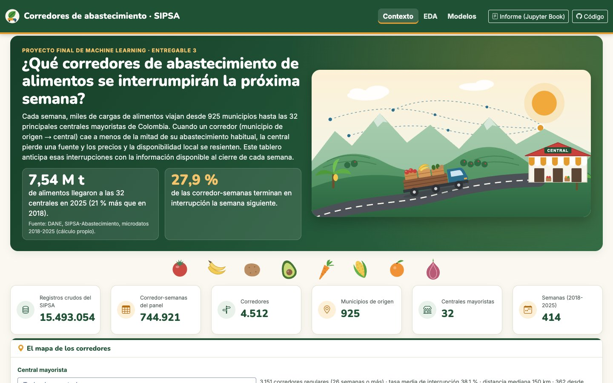
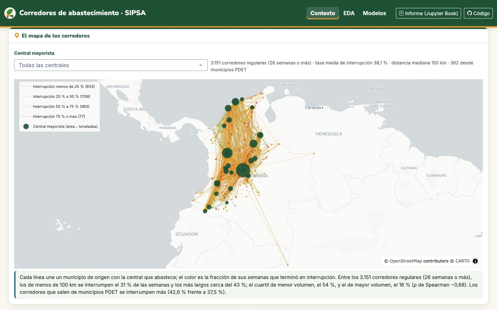
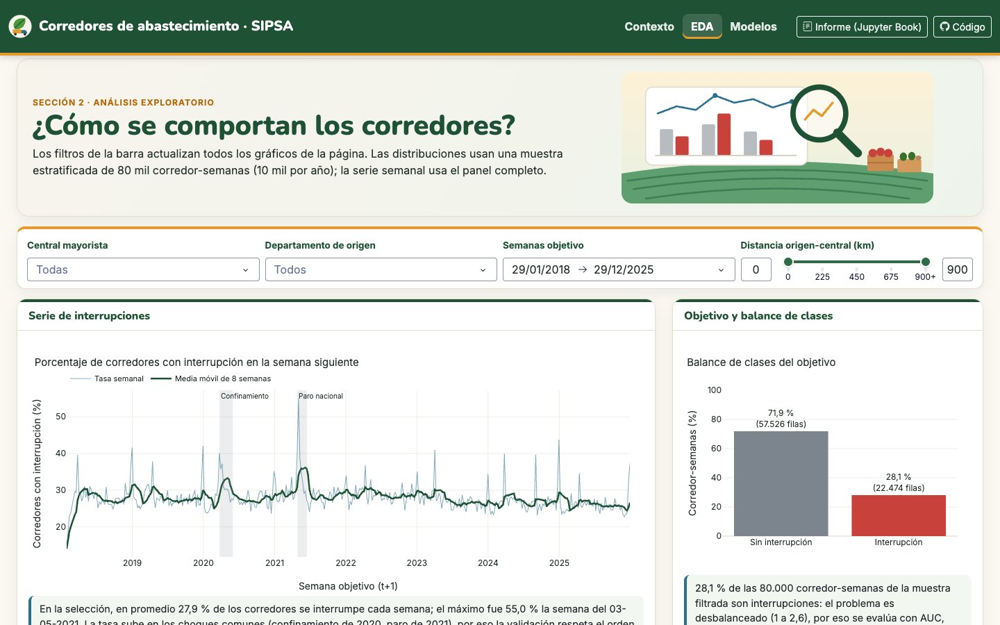
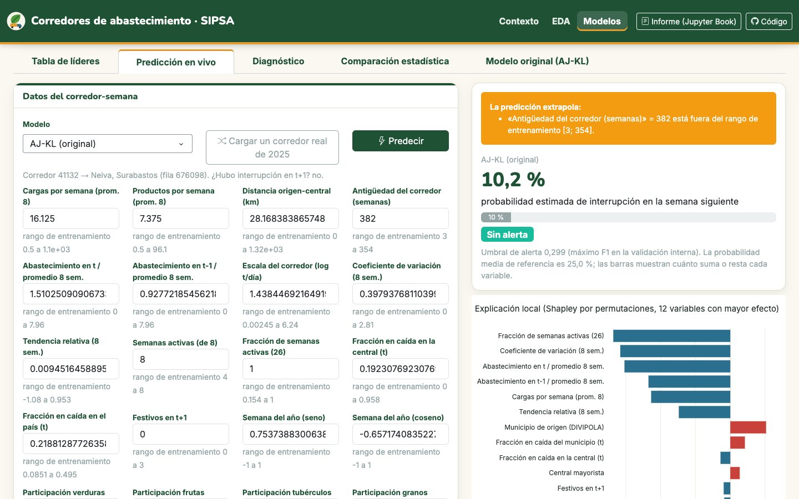
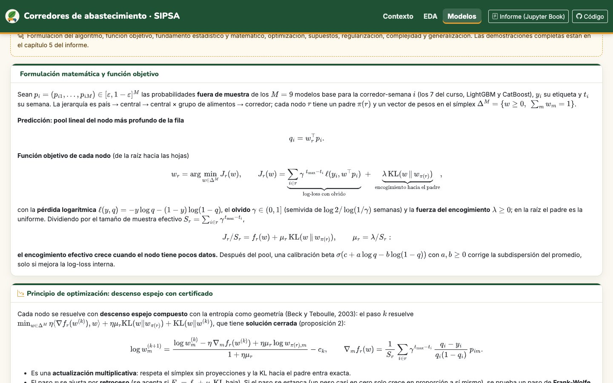
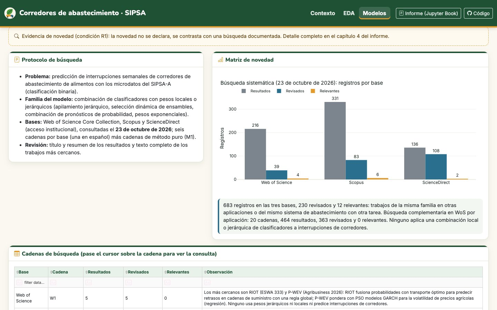
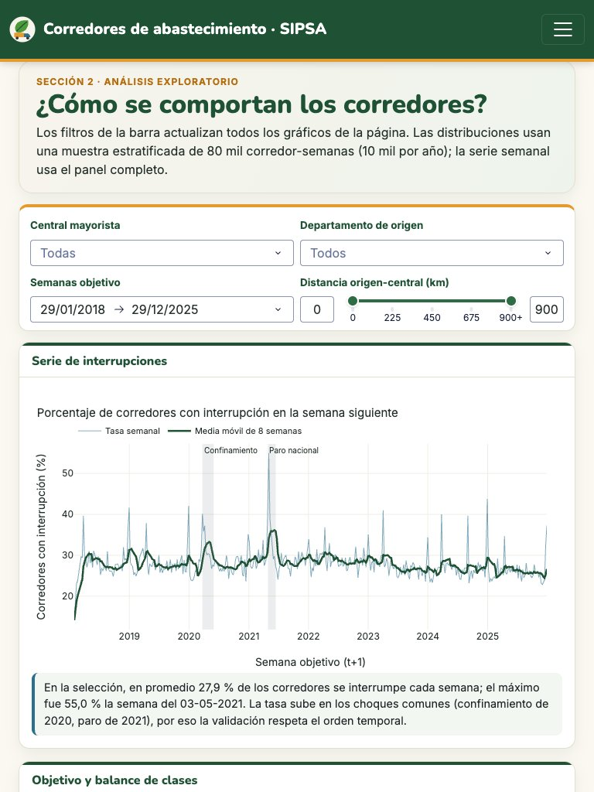

7. Dashboard y despliegue#
El dashboard está publicado en https://sipsa-corredores-e3-2uw9.onrender.com. Es una aplicación multipágina
de Dash (use_pages=True) con tres secciones, Contexto, EDA y Modelos, pensada para que una persona sin
formación en aprendizaje automático entienda el problema, explore los datos y use los modelos. Desde la
versión 3.1 también presenta el fundamento teórico y estadístico del modelo original, la revisión de literatura,
el diseño experimental, la robustez y las conclusiones, de modo que la sustentación se puede hacer sobre el
tablero.
7.1 Arquitectura#
Entregable3MachineLearningProject/
├── app.py # crea la app, la barra de navegación fija y expone `server` para gunicorn
├── pages/
│ ├── contexto.py # sección 1: narrativa, formulación del problema, mapa, diccionario, metodología, ética
│ ├── eda.py # sección 2: filtros globales, estadística descriptiva, figuras, transformaciones y fuga
│ └── modelos.py # sección 3: nueve pestañas, de los líderes a las conclusiones (/modelos?tab=...)
├── src/
│ ├── original_model.py # clase ApilamientoJerarquicoKL (AJ-KL, numpy + scipy)
│ ├── data.py # carga única y en caché (lru_cache) de datos y artefactos
│ ├── plots.py # funciones de figuras Plotly reutilizadas por el dashboard y el libro
│ ├── sustentacion.py # textos con ecuaciones (MathJax) y bloques de fundamentos, literatura, diseño y conclusiones
│ ├── explicacion.py # valores de Shapley por permutaciones para la explicación local
│ └── artefactos.py # tuberías completas, AJKLProduccion, metadatos y esquema de entrada
├── artifacts/ # 10 modelos serializados (7 del curso, LightGBM, CatBoost y AJ-KL) (joblib, compress=3), metadata.json y predicciones de referencia
├── data/dashboard/ # datos livianos: muestra del EDA, series, mapa, predicciones 2025, SHAP, pruebas, robustez,
│ # literatura, pliegues, encogimiento por nodo (scripts 17, 26 y 28)
├── assets/estilo.css # paleta de cinco colores y estilos
├── assets/img/ # ilustraciones propias en SVG (portada, alimentos, EDA, jerarquía del AJ-KL, logotipo)
├── assets/anclas.js # lleva a las anclas (/#formulacion, /eda#fuga) cuando Dash termina de dibujar
├── tests/ # pytest: modelo original, explicación local y prueba de ida y vuelta
├── book/ # este libro
├── requirements.txt # versiones exactas para Render
└── render.yaml # Blueprint de Render
La interfaz, la lógica de datos y los artefactos están separados: las páginas solo llaman a data.py (que
lee una vez cada archivo) y a plots.py. El servidor nunca entrena ni optimiza: deserializa los diez
artefactos de artifacts/, que pesan en total unos 23 MB, y lee data/dashboard/ (unos 13 MB).
7.2 Secciones y decisiones de diseño#
Contexto. Una portada con la pregunta del proyecto, dos cifras con fuente (7,54 millones de toneladas recibidas por las 32 centrales en 2025 según los microdatos del SIPSA; 27,9 % de corredor-semanas con interrupción) y una ilustración del problema: un camión cargado de alimentos que baja por una carretera entre montañas andinas hacia una central mayorista, con la red de corredores dibujada en el cielo. Debajo, una banda con los alimentos que más llegan a las centrales, tarjetas con el tamaño del panel y el mapa de los corredores (Figura 2): cada línea une un municipio de origen con la central que abastece y su color es la fracción de semanas con interrupción; el área de cada central es proporcional a las toneladas del último año, y un selector permite ver una sola central con su encuadre. El mapa muestra lo que el EDA confirma después: los corredores largos, los de poco volumen y los que salen de municipios PDET se interrumpen más. Siguen la pregunta de investigación y los objetivos, la formulación matemática del problema (razón de abastecimiento, variable objetivo, predictores medibles en \(t\), tarea y criterio de evaluación, con ecuaciones dibujadas por MathJax), la fuente y el periodo de los datos, un diccionario de variables que se puede filtrar, el diagrama de la metodología y una sección de limitaciones, ética y sesgos.


Figura 1 Sección Contexto: portada con la ilustración del corredor y cifras clave.#


Figura 2 Mapa de los 3.151 corredores regulares coloreados por su tasa histórica de interrupción.#
EDA. Cuatro filtros globales en una barra fija (central, departamento de origen, rango de semanas con
DatePickerRange y distancia con RangeSlider) actualizan todas las figuras: serie semanal de interrupciones
con los choques de 2020 y 2021 marcados, balance de clases, distribuciones univariadas, un explorador bivariado
con selectores de ejes y color, la matriz de correlación de Spearman, faltantes y atípicos, la descomposición
STL, la ACF/PACF y las pruebas ADF y KPSS. Una tabla de estadística descriptiva (media, desviación,
cuantiles, faltantes y mediana por clase) responde a los mismos filtros, y una tarjeta final explica las
transformaciones del preprocesamiento y las cinco reglas contra la fuga de información. Cada figura lleva una
frase de interpretación calculada con los datos filtrados, de modo que el texto cambia con la selección.


Figura 3 Sección EDA con los filtros globales.#
Modelos. Nueve pestañas, cada una con enlace directo (/modelos?tab=t-fund, por ejemplo):
Tabla de líderes (
DataTableordenable y filtrable): la mejor combinación de cada modelo, LightGBM, CatBoost y el AJ-KL, con las métricas del bucle externo como media ± desviación estándar, el AUC de 2025, el tiempo de inferencia y el tamaño del artefacto, y una tabla que justifica cada métrica.Predicción en vivo: un formulario generado a partir del esquema de
metadata.json(34 variables con su tipo y rango), un selector de modelo y un botón que carga un corredor real de 2025. La salida muestra la probabilidad, la alerta con el umbral del modelo y la explicación local por valores de Shapley. Las entradas vacías, no numéricas o imposibles (negativas, fracciones mayores que 1, categorías no vistas) se rechazan con un mensaje; las que caen fuera del rango de entrenamiento se aceptan con un aviso de extrapolación, porque valores como la antigüedad de un corredor crecen legítimamente con el tiempo.Modelo AJ-KL: veredicto, idea, pseudocódigo, pesos por central, ablación y pruebas unitarias.
Fundamentos teóricos (Figura 5): formulación y función objetivo, descenso espejo con certificado, regularización e interpretación bayesiana, fundamento estadístico, las diez proposiciones con su idea de demostración, supuestos, complejidad con tiempos medidos y la evidencia del encogimiento por nodo.
Literatura y novedad (Figura 6): protocolo, matriz de novedad por base y cadena, familias de modelos, trabajos más cercanos, diferencias por familia y declaración de novedad.
Diseño experimental: línea de tiempo de la validación anidada, espacio y elección de hiperparámetros, implementación, reproducibilidad y decisiones computacionales.
Validación estadística: criterio de superioridad, diagrama de diferencia crítica, tabla de pruebas, fundamento de cada prueba y robustez (sensibilidad, semillas, ruido, desbalance y tamaño de muestra).
Diagnóstico y errores: curvas ROC y precisión-recall, matriz de confusión, calibración y SHAP global frente a XGBoost, diagnóstico de sobreajuste (AUC interno frente a externo) y análisis de errores por subgrupo y por central.
Conclusiones: veredicto sobre R1, R2 y R3, hallazgos, limitaciones, trabajo futuro y generalización a tres conjuntos adicionales.
La barra de navegación tiene, además de las tres secciones, dos botones que abren este informe (Jupyter Book) y el repositorio de código en una pestaña nueva.


Figura 4 Predicción en vivo con explicación local.#


Figura 5 Pestaña de fundamentos teóricos: formulación y función objetivo del AJ-KL.#


Figura 6 Pestaña de literatura y novedad: protocolo y matriz de búsqueda en las tres bases.#
Identidad visual. La paleta sale del propio tema: verde montaña (#1f5135) para la estructura y los
títulos, azul río (#2b6f8e) para los datos y los benchmarks, ámbar cosecha (#e39b2d) para el modelo
original, rojo tomate (#c8423b) para las interrupciones y gris piedra (#7c858d) para las referencias, sobre
un fondo crema. Las ilustraciones (portada, banda de alimentos, cabecera del EDA, diagrama de la jerarquía del
AJ-KL en la cabecera de Modelos y logotipo) son propias, en SVG: no dependen de fotografías con licencia, pesan
pocos kilobytes y escalan sin perder nitidez. Cada una tiene texto alternativo. La tipografía es Nunito para los
títulos e Inter para el texto.
Criterios de calidad. Tema FLATLY de dash-bootstrap-components con la paleta anterior,
plantilla Plotly única con títulos y ejes con unidades, barra de navegación fija y rejilla dbc.Row /
dbc.Col que reacomoda los filtros y las tarjetas en tableta (Figura 7). Los datos y los
modelos se cargan una sola vez; los callbacks usan prevent_initial_call y no_update donde corresponde, y
las excepciones de la predicción se muestran en un dbc.Alert sin detener la aplicación. Ningún color es la
única forma de leer una figura: las clases y los modelos también se distinguen por etiquetas y leyendas.


Figura 7 Sección EDA en una tableta (768 × 1024).#
7.3 Despliegue en Render#
Verificar localmente con
python app.py(ogunicorn app:server) que las tres páginas y los callbacks funcionan.requirements.txtfija las versiones exactas con las que se serializaron los artefactos (scikit-learn 1.9.1, XGBoost 3.2.0, LightGBM 4.7.0, CatBoost 1.2.10, imbalanced-learn 0.14.2, Dash 4.4.1, entre otras) y Python 3.11.16 se fija enrender.yaml.El repositorio público en GitHub contiene el código, los artefactos y
render.yaml. En Render se crea el servicio desde el Blueprint, que ejecutapip install -r requirements.txty arrancagunicorn app:server --workers 1 --threads 2 --timeout 180.Se revisaron los registros de construcción y se probaron todas las páginas y la predicción en la URL pública.
El plan gratuito de Render suspende el servicio tras un periodo sin visitas, de modo que el primer acceso puede tardar cerca de un minuto. Además tiene poca CPU: la matriz de correlación del EDA tardaba unos 30 s porque calculaba la Spearman de pandas por pares dos veces; ahora se calcula una sola vez con rangos y tarda unos 6 s. Para la sustentación conviene abrir la URL unos minutos antes. Con un solo proceso y los artefactos aligerados, la aplicación usa menos memoria de la que ofrece el plan gratuito.